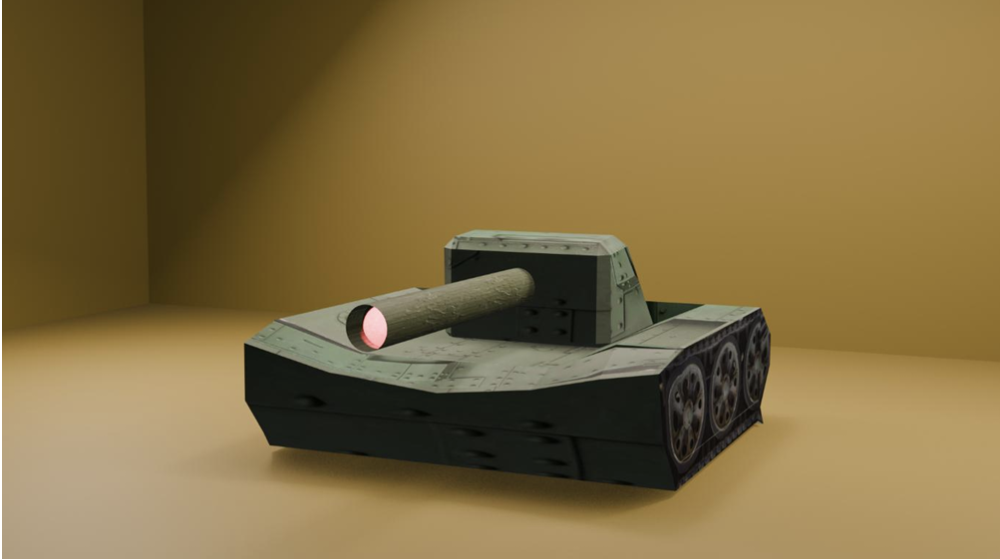

PRJ_01 COMPLETE VIEW LOG →Animation
Low-poly models and scene sets built and staged in 3D.
3D MODELLING
SCENE DESIGN
A set of 3D pieces — a low-poly tank, a wood-grained creature, a neon street diorama and an isometric room — modelled flat-shaded, lit on a simple studio set, and finally staged inside an interactive scene with a character stats panel.